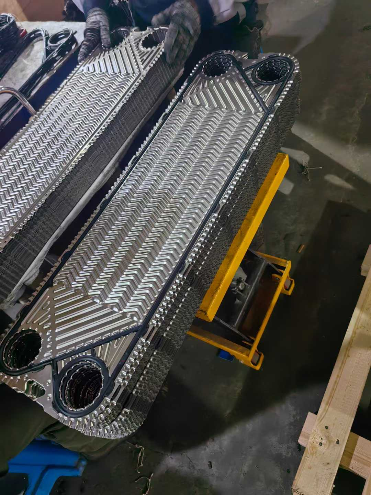

APV与SPX板式换热器及配件大全：常用型号与板片胶垫选型指南
APV（安培威）是全球板式换热器的老牌厂商，尤其在食品、乳品、啤酒和船舶行业占有量极大。很多船东和工程商在订配件时会纠结一个问题：**铭牌上写APV还是SPX，件一样吗？**这篇文章把品牌关系、型号体系、常用型号和板片胶垫配件一次讲清楚，常用型号用★标出，方便快速对照。
一、APV和SPX到底是什么关系
| 时间 | 事件 |
|---|---|
| 历史 | APV是丹麦老牌换热与流体设备制造商 |
| 2008年 | APV并入SPX集团 |
| 2015年 | SPX FLOW从SPX集团分拆独立上市 |
| 至今 | APV作为SPX FLOW旗下品牌继续运营 |
结论：现在市面上的"APV板式换热器"和"SPX板式换热器"，是同一套产品线。老设备铭牌写APV，新设备标SPX FLOW APV，型号数字相同就是同一种板型，板片和胶垫完全通用。
SPX FLOW旗下还有Waukesha Cherry-Burrell（乳品卫生设备）、Johnson Pump、Lightnin搅拌等品牌，但板式换热器这条线就是APV。
二、看懂APV的型号命名
APV型号一般是"字母+数字+后缀"：
- 字母代表板型系列（A/B/H/N/Q/M/J/SR/R/P/TR/T）
- 数字大致对应单板面积×100（如H17约0.17m²，N50约0.50m²）
- 后缀表示版本差异：L/S是长板/短板，D/E是深槽/浅槽（如Q030D深槽、Q030E浅槽），G多指粘贴式胶垫（如SR6GL），此外还有A/V/N/P等特殊版本
⚠️ 后缀不同就是不同板型，胶垫一般不通用。订购时型号必须写全，比如Q080E不能简写成Q080。
三、APV常用型号清单（★为常用型号）
1. H系列 — 卫生级通用（★重点）
| 型号 | 单板面积 | 常用度 | 典型应用 |
|---|---|---|---|
| H12 | 0.14 m² | ★★★★★ | 乳品、食品、CIP系统 |
| H17 | 0.17 m² | ★★★★★ | 船用造水机、食品、海水冷却 |
| H12 WDU | 0.14 m² | ★★★ | 双壁安全型 |
| H20 / H25 / H30 | 更大 | ★★ | 大型卫生工况 |
H12和H17是APV在全球装机量最大的两个板型，船用造水机（淡水发生器）里H17几乎随处可见。
2. N系列 — 紧凑型通用工业（★重点）
| 型号 | 单板面积 | 常用度 |
|---|---|---|
| N25 | 0.25 m² | ★★★★★ |
| N35 | 0.36 m² | ★★★★★ |
| N35 Dousafety | 0.36 m² | ★★★（双壁安全型） |
| N40 | — | ★★★ |
| N50 | 0.50 m² | ★★★★ |
N系列是暖通、工业冷却里的主力，性价比高、板片易采购。
3. Q系列 — 暖通空调主力（★重点）
| 型号 | 单板面积 | 常用度 |
|---|---|---|
| Q030D / Q030E | 0.31 / 0.32 m² | ★★★★★ |
| Q055D / Q055E | 0.57 / 0.55 m² | ★★★★★ |
| Q080D / Q080E | 0.8 m² | ★★★★ |
| QD030 / QE030 / QD055 / QE055 / QD080 / QE080 | 同上 | ★★ |
Q030、Q055、Q080是中央空调和区域供热最常见的三个规格，D是深槽（高阻力高传热）、E是浅槽（低阻力）。
4. A系列 — 大板工业型
| 型号 | 单板面积 | 常用度 |
|---|---|---|
| A055 | 0.55 m² | ★★★ |
| A085 | 0.85 m² | ★★★★ |
| A145 | 1.45 m² | ★★★★ |
5. B系列 — 宽通道/含颗粒介质
B063L、B063S、B105、B110L、B110S、B134L、B134S、B158L、B205L、B205S（★B134、B158较常用）
L为长板、S为短板，用于含纤维、颗粒或高粘度介质。
6. J系列 — 大型工业（★重点）
| 型号 | 单板面积 | 常用度 |
|---|---|---|
| J060 | 0.60 m² | ★★★ |
| J092 | 0.92 m² | ★★★ |
| J107 | 1.07 m² | ★★★★ |
| J154 | — | ★★ |
| J185 | 1.85 m² | ★★★★ |
J系列是石化、电力、冶金大型冷却的常用大板型。
7. M系列 — 中型工业
M60、M92、M107、M185（★M92、M107较常用）
8. R系列 — 高压型（★重点）
| 型号 | 常用度 | 说明 |
|---|---|---|
| R5 | ★★★★ | 高压小流量，槽深5.4mm |
| R8 / R8GI | ★★★★ | 0.75~0.78 m²，高压大流量 |
| R10 | ★★★★ | 1.2 m²，高压 |
| R6 / R14 / R23 / R40 / R55 / R66 / R86 / R89 / R106 / R145 / R235 / R405 | ★★ | 更大规格 |
R系列耐压高，用于液压油冷却、高压工艺换热。
9. SR系列 — 卫生/半焊（★重点）
| 型号 | 常用度 | 说明 |
|---|---|---|
| SR2 | ★★★★ | 小型卫生 |
| SR6GL / SR6AG / SR6GH / SR6AA | ★★★★★ | 0.56~0.9 m²，食品乳品常用 |
| SR9 | ★★★★ | 中型卫生 |
| SR14AD / SR14AH / SR14AN / SR14AP / SR14GD / SR14AG | ★★★ | 大型卫生 |
| SR1 / SR3 / SR23AO / SR23PV / SR23VO / SR38 / SR95 | ★★ | 特殊版本 |
10. TR系列 — 大型船用/工业
| 型号 | 单板面积 | 常用度 |
|---|---|---|
| TR9（I/II/III） | 1.5 / 1.18 / 0.86 / 0.54 m² | ★★★★ |
| TR9AL / TR9AV / TR9GL / TR9GN | — | ★★★★ |
| TR1 | — | ★★ |
TR9系列是船用中央冷却器和大型造水机的常客，不同后缀对应不同板长。
11. 其他型号
T4（0.04 m²，小型）、K34 / K55 / K71（卫生小型）、P105 / P190（工艺型）、LR9AL / LR9GL / LD9AL / LD9GL（TR9的衍生版本）、HMB / HX / WHX / JUNIOR / FFPE / PESERIII / RFE / CS235 / CZ450A / D37 / U2 / CHF130 / SR15PE

四、板片规格对照表
| 型号 | 槽深(mm) | 角孔(mm) | 孔距(mm) | 外形(mm) | 单板面积(m²) |
|---|---|---|---|---|---|
| T4 | 2.5 | φ32 | 381×70 | 450×140 | 0.04 |
| H12 | 3.0 | φ74 | 620×150 | 738×266 | 0.14 |
| H17 | 3.0 | φ74 | 800×150 | 920×271 | 0.17 |
| N25 | 2.8 | φ85 | 793×238 | 930×373 | 0.25 |
| N35 | 2.8 | φ85 | 1069×238 | 1203×371 | 0.36 |
| N50 | 2.8 | φ85 | 1483×238 | 1620×373 | 0.50 |
| Q030E | 3.0 | φ114 | 743×310 | 920×496 | 0.32 |
| Q030D | 4.2 | φ112 | 743×310 | 920×492 | 0.31 |
| Q055E | 3.0 | φ114 | 1238×310 | 1415×496 | 0.55 |
| Q055D | 4.2 | φ112 | 1238×310 | 1415×492 | 0.57 |
| Q080E | 3.0 | φ114 | 1757×310 | 1934×496 | 0.80 |
| A055 | 3.2 | φ150 | 1057×380 | 1271×595 | 0.55 |
| A085 | 3.2 | φ150 | 1531×380 | 1745×595 | 0.85 |
| A145 | 3.2 | φ150 | 2479×380 | 2693×595 | 1.45 |
| J060 | 3.0 | φ229 | 915×465 | 1192×746 | 0.60 |
| J092 | 3.0 | φ229 | 1290×465 | 1567×746 | 0.92 |
| J107 | 3.0 | φ229 | 1477×465 | 1755×746 | 1.07 |
| J185 | 3.0 | φ229 | 2415×465 | 2692×746 | 1.85 |
| R5 | 5.4 | φ101 | — | — | — |
| R8 / R8GI | 3.6 | φ148 | 1525×334 | 1737×546 | 0.75 / 0.78 |
| R10 | 9.6 | φ197 | 1684×432 | 1986×712 | 1.20 |
| SR6GL | 3.8 | φ102 | 1256×314 | 1418×476 | 0.56 |
| SR6AG | 3.8 | φ102 | 1891×314 | 2053×476 | 0.90 |
| TR9-III | 3.2 | φ200 | 1033×409 | 1291×670 | 0.54 |
| TR9-II | 3.2 | φ200 | 1465×409 | 1723×670 | 0.86 |
| TR9-I | 3.2 | φ200 | 1879×409 | 2155×670 | 1.18 |
| TR9 | 3.2 | φ200 | 2329×409 | 2587×670 | 1.50 |
五、板片与胶垫配件
板片材质
| 材质 | 适用介质 |
|---|---|
| 304不锈钢 | 生活热水、普通工业水 |
| 316L不锈钢 | 冷却水、工艺水（最常用） |
| 钛（Ti） | 海水、盐水、造水机 |
| SMO 254 | 高氯离子、稀硫酸 |
| 哈氏合金 C-276 | 强腐蚀介质 |
板厚常规0.5mm，部分大板有0.6/0.7mm。
胶垫材质
| 材质 | 耐温 | 适用 |
|---|---|---|
| NBR | -15~120°C | 水、海水、油、食品（FDA/3A可选） |
| EPDM | -25~170°C | 热水、蒸汽、酸碱 |
| HNBR | -15~140°C | 高温油、高温水 |
| FKM（Viton） | -5~180°C | 强腐蚀、有机溶剂 |
食品乳品行业一定要选FDA或3A认证的食品级胶垫，普通工业垫不能混用。
其他配件
- 框架与压紧螺栓（Tie bolts）：长螺栓拉伸量决定压紧力，锈蚀、螺纹损伤必须换
- 承载导杆/上导杆（Carrier bar）：板片悬挂轨道，磨损会导致板片错位
- 接口衬套/法兰衬环（Port rings / Frame liners）：接口腐蚀渗漏的主要部位
- 双壁安全板片：如H12 WDU、N35 Dousafety，用于两种介质绝不能混合的场合（饮用水、医药）
六、订购与更换要点
- 型号写全后缀：Q080E≠Q080D，SR6GL≠SR6AG，TR9-I/II/III板长不同
- 报夹紧尺寸A和板片数：老设备改过板片的，只有A尺寸+板数才能确认配置
- 板片材质按介质：海水一定用钛，别用316L凑
- 食品行业要认证：胶垫要有FDA/3A文件，食品级和非食品级不能混
- 拆机前记录A尺寸，换垫后压回原值；对角分次上紧，四角A值一致
- 清洗禁盐酸，用中性或专用清洗剂，软刷单向，逐张查针孔
- 新旧胶垫不混装，整套更换
七、总结
- APV和SPX是一家：2008年并入SPX，2015年归入SPX FLOW，型号相同则配件通用
- 常用就那几个：H12/H17（卫生、造水机）、N25/N35/N50（通用）、Q030/Q055/Q080（暖通）、A085/A145、J107/J185（大型）、R5/R8/R10（高压）、SR6/SR9（食品）、TR9（船用）
- 后缀决定能不能装：D/E、L/S、GL/AG这些字母看错，件就白买了
如需APV/SPX各系列板片、胶垫、框架配件，泰州日船流体控制科技有限公司备有常用型号现货，报上铭牌完整型号和板片数即可快速报价。